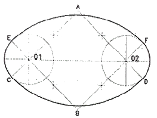
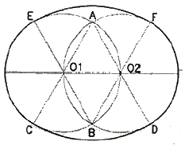
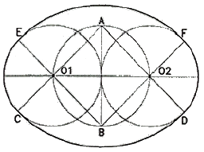
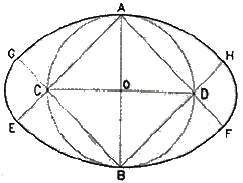
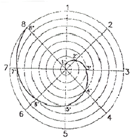
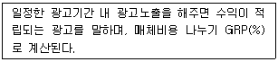
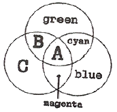

시각디자인기사 (2013-06-02 기출문제)
1과목: 시각디자인론
1. 다음 중 메시지(Message)를 가장 중요시하는 디자인 분야는?
- 제품디자인
- 시각디자인
- 환경디자인
- 의상디자인
(정답률: 알수없음)

2. 포장을 흔히 "말없는 세일즈맨"이라고 한다. 어느 기능을 설명한 것인가?
- 보호와 보존
- 전달
- 유용
- 일치
(정답률: 알수없음)
3. 현판, 현수막을 통해 기업, 단체의 광고 메시지를 알리는 문자 위주의 광고 목적을 가진 것은?
- hanger
- mobile
- plancard
- sample case
(정답률: 64%)
4. 심벌(symbol) 제작시 고려할 사항이 아닌 것은?
- 사물의 성격, 목적, 용도의 고려
- 식별력과 개성
- 시대변화만을 고려한 일회성 정체성
- 다양한 매체와 환경에 대한 적응성
(정답률: 80%)
5. 근대 디자인의 전기가 된 바우하우스와 직접 관련되지 않은 사람은?
- 칸딘스키(W. Kandinsky)
- 모흘리 나기(L. Moholy-Nagy)
- 앙리 반 데 벨데(Henri Van de Velde)
- 미스 반 데 로에(Mies van der Rohe)
(정답률: 31%)
6. 다음 중 주로 지역특성을 살리는 이미지가 중요한 요소인 포스터는?
- 문화행사 포스터
- 계몽 포스터
- 광고 포스터
- 관광 포스터
(정답률: 85%)
7. 기능 중의 설명 중 "형태는 기능에 따른다." 라고 주장한 사람은?
- 그로피우스
- 윌리엄 모리스
- 모흘리나기
- 루이스 설리반
(정답률: 알수없음)
8. 소비자의 보편적인 심리변화 반응의 단계를 나타내는 것으로 마케팅과 광고에는 AIDMA의 원리가 있다. 그 내용과 순서가 옳은 것은?
- 주목(Attention) - 흥미(Interest) - 욕구(Desire) - 시장(Market) - 행동(Action)
- 행동(Action) - 흥미(Interest) - 방어(Defense) - 기억(Memory) - 주목(Attention)
- 행동(Action) - 흥미(Interest) - 욕구(Desire) - 기억(Memory) - 주목(Attention)
- 주목(Attention) - 흥미(Interest) - 욕구(Desire) - 기억(Momory) - 행동(Action)
(정답률: 알수없음)
9. 전자출판 프로세스가 아닌 것은?
- 사진식자
- 사진 수정 및 합성
- 출력
- 스캐닝
(정답률: 60%)
10. 환경오염 문제와 관련하여 생태학적으로 건강하고 환경보존에 해를 끼치고 않도록 디자인된 제품이나 포장을 뜻하며, 이를 염두에 두고 전개시키는 디자인은?
- 굿 디자인(good design)
- 그린 디자인(green design)
- 스페이스 디자인(space design)
- 안티 디자인(anti-design)
(정답률: 알수없음)
11. 인간의 지각현상에서 도형과 바탕에 대한 일반적인 설명으로 틀린 것은?
- 도형은 앞으로 두드러져 보이므로 가까워 보이고 바탕은 멀어져 보인다.
- 도형은 선이나 표면이 입체적으로 보이는데 반해 바탕은 그렇지 않다.
- 바탕은 표면이 있는것처럼 보이나 도형은 그렇지 않다.
- 바탕은 인상과 주목성이 약한데 반해 도형은 강하다.
(정답률: 86%)
12. 브레인스토밍(Brain storming)의 규칙이 아닌 것은?
- 비판하지 말 것
- 질보다는 양을 중요시 할 것
- 독창적인 아이디어를 제안할 것
- 딴 사람의 아이디어를 마음껏 활용할 것
(정답률: 알수없음)
13. 실제 인간이나 동물의 움직임을 디지털 코드화하여 3D캐릭터에 적용시키는 방식을 의미하는 용어는?
- 디포메이션
- 스켈톤 애니메이션
- 서드퍼슨 VR
- 모션캡쳐
(정답률: 64%)
14. WIPO는?
- 세계상표권기구
- 세계지적재산권기구
- 세계무역기구
- 세계실용신안법기구
(정답률: 55%)
15. 천박하며 저속한 모조품, 대량생산된 싸구려 상품이 마치 훌륭한 진품인 것처럼 스스로를 기만하는 현상을 의미하며, 통속적인 디자인과 그러한 유형을 일컫는 것은?
- 멤피스(Memphis)
- 아르누보(Art Nouveau)
- 포스트모더니즘(Postmodernism)
- 키치(Kitsch)
(정답률: 알수없음)
16. 컴퓨터의 2D 프로그램은 크게 드로잉 프로그램(Drawing program)과 페인팅 프로그램(Painting Program)으로 나눌 수 있다. 이 두 가지 프로그램의 일반적인 특성을 설명한 것 중 옳은 것은?
- 드로인 프로그램은 대부분 비트맵(Bitmap) 방식이다.
- 드로잉 프로그램은 페인팅 프로그램보다 손쉽게 이미지를 수정, 변경할 수 있다.
- 페인팅 프로그램은 상대적으로 적은 기억용량(Memory)을 필요로 한다.
- 페인팅 프로그램은 간단한 기계류의 설계도면을 제작하는데 유용하게 쓰인다.
(정답률: 63%)
17. 캘린더 디자인에 관한 설명 중 틀린 것은?
- 아이디어 창출을 위해 기초 작업으로 배포대상의 설정과 용도별 선정, 소비자의 욕구를 분석해야 한다.
- 조형적 기능(재료, 일러스트레이션, 레이아웃)이 물리적기능(숫자, 메모란)보다 우선 고려되어야 한다.
- 일러스트레이션은 기업의 경영이념이나 생산품의 속성을 은유적 방법으로 제시하며, 장식성이 가미될 필요가 있다.
- 사용되는 타이포그래피는 일러스트레이션과 조화를 이루어야 하며, 가독성의 검토와 시대적인 감각을 고려해야 한다.
(정답률: 알수없음)
18. 멀티미디어 콘텐츠 종류로 공공성이 강한 홍보물, 정보 등이 온라인과 결합하여 공공장소에서 터치스크린 방식으로 정보를 전달하는 시스템은?
- Kiosk system
- VOD system
- Navigation system
- Network system
(정답률: 82%)
19. 멤피스 디자인 운동에 대한 설명으로 옳은 것은?
- 미국에서 맨 처음 시작되었다.
- 에토레 소트사스가 중심인물이다.
- 이탈리아의 올리베티사가 주도하였다.
- 포스트모더니즘에 대한 반대로 시작되었다.
(정답률: 60%)
20. 상표법의 목적에 해당되지 않는 것은?
- 수요자의 이익 보호
- 상표사용자의 업무상의 신용유지
- 산업발전의 이바지
- 상표를 구성하는 기호, 문자, 도형의 보호
(정답률: 30%)
2과목: 조형심리학
21. 다음 타원의 작도법 중 단축이 주어질 때의 작도법은?




(정답률: 알수없음)
22. 다음 중 조형예술 측면에서 최초의 요소로 규정지을 수 있고, 기하학 측면에서 위치를 결정하는 것은?
- 점
- 선
- 면
- 입체
(정답률: 82%)
23. 다른 원리에 비해 생명감이 강하며 활기있는 표정과 경쾌한 느낌을 주는 것은?
- 통일
- 리듬
- 대칭
- 균형
(정답률: 알수없음)
24. 다음 그림과 같은 선은?

- 피타고라스 소용돌이선
- 아르키메데스 소용돌이선
- 황금비 직사각형 소용돌이선
- 원의 신 개선식 소용돌이선
(정답률: 70%)
25. 디자인의 조건 중 감성소비시대에 특히 주목받는 가치는?
- 실용성
- 심미성
- 경제성
- 기능성
(정답률: 82%)
26. 시각적인 표현에서 율동감을 주기 위한 방법으로 가장 옳은 것은?
- 반복되는 요소들의 악센트를 없앤다.
- 순환하는 요소들을 강약을 주어 표현한다.
- 독자적인 무늬를 사방에 그려 넣는다.
- 시각적인 자극과 자극간의 간격을 최대한 줄인다.
(정답률: 91%)
27. 볼프의 대칭(Symmetry) 기본 조작이 아닌 것은?
- 반영
- 평행이동
- 확대
- 통일
(정답률: 37%)
28. 흑과 백의 컵 그림을 이용하여 도형과 바탕의 관계를 설명한 덴마크의 심리학자는?
- 몬드리안
- 모흘리나기
- 칸딘스키
- 루빈
(정답률: 60%)
29. 인간의 감성을 언어에 기초하여 측정하는 방법은?
- SD법
- GSR
- EEG
- 프로토콜 분석
(정답률: 60%)
30. 입체의 각 방향의 면에 화면을 두어 투영된 면을 전개하는 투상도법은?
- 축측투상
- 투시투상
- 정투상
- 사투상
(정답률: 40%)
31. 전항에 전전항을 더하여 가는 수열로서 황금비를 설명하는 수열은?
- 조화수열
- 등비수열
- 피보나치수열
- 펠의수열
(정답률: 70%)
32. 투시도 제작 시 사용되는 부호와 용어의 연결이 틀린 것은?
- GL - Ground Line(화면과 지면이 만나는 선)
- EP - Equal Point(같은 높이의 점)
- CV - Center of Vision(시점의 화면상의 위치)
- PP - Picture Plan(지표면에서 수직으로 세운 면)
(정답률: 30%)
33. 시인성에 관한 설명이 아닌 것은?
- 시인성은 전경과 배경의 밝기대비에 의존한다.
- 시인성은 조명의 질과 양에 영향을 받는다.
- 색채마다 고유한 시인성이 있다.
- 색채의 시인성은 어떤 배경 하에서도 변하지 않는다.
(정답률: 91%)
34. 석양 무렵 사물의 색이 청색조를 띄게 되는 형상은?
- 잔상 현상
- 푸르킨예 현상
- 리프만 현상
- 마하밴드 현상
(정답률: 92%)
35. 동양화에서 가장 많이 사용된 조형의 요소는?
- 점
- 선
- 면
- 색
(정답률: 알수없음)
36. 구성주의 심리학자들은 전경과 배경의 분리에서 무엇이 가장 중요한 역할을 한다고 보는가?
- 지각의 구성 법칙
- 양안단서
- 공간 주파수 규모
- 지각자의 추론, 경험
(정답률: 59%)
37. 어떤 사물이 주변여건이나 환경이 바뀌어도 그 사물에 대한 고정적인 인식을 하고 그대로 지각하고 있는 현상은?
- 지각의 동질성
- 지각의 항상성
- 지각의 점진성
- 지각의 착오성
(정답률: 80%)
38. 바탕과 도형을 구분하는 일반적 조건 중 틀린 것은?
- 작은 것이 큰 것보다 도형이 되기 쉽다.
- 싸고 있는 영역보다 싸여 있는 영역이 도형이 되기 쉽다.
- 폐쇄된 형이 도형이 되기 쉽다.
- 대칭적인 것보다 비대칭의 것이 도형이 되기 쉽다.
(정답률: 91%)
39. 일직선상을 하나의 원이 미끄러지지 않고 굴러갈 때 원 위의 한 점이 그리는 곡선은?
- 아르키메데스 와선
- 인벌류트 곡선
- 사이클로이드 곡선
- 트로코이드 곡선
(정답률: 알수없음)
40. 영화와 움직이는 네온사인의 원리와 같이 본래는 정지되어 있는 사물임에도 불구하고 움직이는 물체로 인지되는 현상은?
- 가현운동(假現運動)
- 가시운동(可視運動)
- 분리운동
- 동화운동(同化運動)
(정답률: 47%)
3과목: 광고학
41. SWOT 분석에서 "s"는 무엇을 의미하는가?
- 목표
- 효력
- 견해
- 강점
(정답률: 알수없음)
42. 다음 중 특정 매체에 소속되어 있는 대행사는?
- 종합광고 대행사
- 전속광고 대행사
- 전문광고 대행사
- 광고제작 대행사
(정답률: 60%)
43. 라디오 광고에서 징글(jingle)이란?
- 효과음
- 드라마 방식
- CM 송
- 소비자증언
(정답률: 64%)
44. 컨슈머리즘(Consumerism) 이란?
- 인격적, 재산적, 명예회복의 권리
- 소비자의 기본적 권리를 지키기 위해 주장하는 이념
- 소비자와 직접적인 유통경로를 구축하는 마케팅 활동
- 저작자나 이용자가 보호받아야 할 권리
(정답률: 알수없음)
45. 일정기간 가구 또는 개인의 평균 광고 접촉 회수는?
- Spot Campaign
- Bleed
- Frequency
- Cost Per Thousand
(정답률: 55%)
46. 상품의 명칭이나 특징, 장점을 소구하는 광고로 상품 그 자체를 광고의 주 소재로 사용하여 전달하는 광고는?
- 전문광고
- 감성광고
- 상품광고
- 이유광고
(정답률: 84%)
47. 특정상황 CM에서 제품과 상표선택에 따라 인지된 관련성 및 개인적 중요성의 정도를 말하는 개념은?
- 태도
- 수용범위
- 관여도
- 구매의사
(정답률: 64%)
48. 탄환이론(the bullet theory)에 대한 설명으로 틀린 것은?
- 미국의 커뮤니케이션 학자인 거브너(George gerbner)등이 제창한 것으로 문화계발효과이론이라고도 한다.
- 매스커뮤니케이션 메시지는 노출되는 모든 수용자들에게 강력하고 어느 정도 효과를 미친다고 예측한다.
- 수용자들이 매스커뮤니케이션의 메시지에 매우 약하다는 것을 상정하고 있다.
- 만약 어떤 메시지가 목표물을 명중시킨다면 바라던 효과를 가질 것이라고 설명한다.
(정답률: 20%)
49. 다음 중 Teaser광고에 대한 설명은?
- 사용해본 사람이 증언을 한다.
- 어떻게 좋은가를 실제로 보여준다.
- 몇 번에 걸쳐 호기심을 자극시킨다.
- 경쟁제품과 비교시킨다.
(정답률: 85%)
50. 광고의 설득적 기능에 해당되지 않는 것은?
- 다른 회사 고객에 대한 견제
- 충성스런 고객의 유지
- 고객의 상실 방지
- 새로운 고객의 획득
(정답률: 알수없음)
51. 다음 내용에 해당되는 광고는?

- CPP
- CPC
- CPS
- CPA
(정답률: 47%)
52. 프로덕트 콘셉트 작성 시 체크 포인트로서 틀린 것은?
- 판단이 불분명한 것은 모두 기록한다.
- 가능한 한 짧게 작성한다.
- 중요한 점이 누락되지 않도록 한다.
- 객관적으로 작성하여 누구라도 알기 쉽게 한다.
(정답률: 62%)
53. TV 프로그램과 프로그램 중간에 삽입되는 광고는?
- 프로그램(Program) 광고
- 스파트(Spot) 광고
- 블록(Block) 광고
- 록컬(Local) 광고
(정답률: 67%)
54. TV매체의 특성으로 거리가 가장 먼 것은?
- 시청각 양면 소구로 감정이입이 빨라 주목률이 높다.
- 즉효성이 높아 신제품의 발표, 판매활동을 연동시킬 수 있다.
- 정보의 회독 효과가 높아 전달력이 증대된다.
- 신뢰성이 높아 시청자들이 안심하고 정보를 받아드린다.
(정답률: 알수없음)
55. 광고, 홍보, 인적 판매는 마케팅믹스의 4P요소 중 어디에 해당되는가?
- 가격(price)
- 유통(place)
- 제품(product)
- 촉진(promotion)
(정답률: 80%)
56. 다음의 크리에이티브 전략을 시대순으로 옳게 제시한 것은?
- 브랜드 이미지 → USP → 포지셔닝
- 포지셔닝 → USP → 브랜드 이미지
- USP → 브랜드 이미지 → 포지셔닝
- 브랜드 이미지 → 포지셔닝 → USP
(정답률: 25%)
57. 광고 효과 특정에서 다루는 내용이 아닌 것은?
- 목표 달성 정도
- 표적시장의 커버(Cover)정도
- 타 마케팅 요소의 조정
- 매체별 성과
(정답률: 62%)
58. 통합적 마케팅 커뮤니케이션(IMC : Integrated Marketing Communication)이란?
- 메시지 전달에서 여러 커뮤니케이션 수단과 경로의 통합조정 개념
- 제품 포장과 디자인, 형태와 색채 등의 커뮤니케이션
- 소비자와의 접속이 일방적으로 진행되는 개념
- 메시지 발신자의 일방적 커뮤니케이션 의지
(정답률: 60%)
59. 다음 광고매체 중 쌍방향 커뮤니케이션의 형태는?
- 신문
- 잡지
- 라디오
- 인터넷
(정답률: 84%)
60. 어떤 아이디어나 대상에 대해 부정적 또는 긍정적으로 반응하는 개인적 성향을 일컫는 것은?
- 태도
- 습관
- 신념
- 학습
(정답률: 73%)
4과목: 색채학
61. 슈브럴(M.E.Chevreul)의 색채 조화론과 관계가 없는 것은?
- 도미넌트 컬러(Dominant Color)
- 보색 배색의 조화
- 세퍼레이션 컬러(Separation Color)
- 동일 색상의 조화
(정답률: 54%)
62. 다음 중 채도의 변화가 가장 적은 것은?
- 순색에 밝은 회색을 섞는다.
- 순색에 보색 관계의 색을 섞는다.
- 순색에 어두운 회색을 섞는다.
- 순색에 유사 색상의 순색을 섞는다.
(정답률: 80%)
63. 다음은 가법혼색(색광)의 3원색을 나타낸 것이다. 빈칸(A,B,C)에 맞게 나열한 것은?

- A: white B: yellow C: red
- A: white B: red C: yellow
- A: black B: yellow C: red
- A: black B: red C: yellow
(정답률: 73%)
64. 색의 온도감에 관한 내용으로 옳은 것은?
- 빨강, 노란색은 한색이다.
- 무채색에서 높은 명도의 색은 난색이다.
- 자주, 청록색은 중성색이다.
- 보라색은 중성색이고, 파란색은 한색이다.
(정답률: 82%)
65. 분광반사율이 다른 두 가지의 색이 어떤 광원 아래에서 같은 색으로 보이는 현상은?
- 메타메리즘
- 등색
- 색지각
- 색순응
(정답률: 70%)
66. 다음 중 무채색에 대한 설명으로 옳은 것은?
- 채도는 없고 색상, 명도만 있다.
- 색상은 없고 명도, 채도만 있다.
- 색상, 명도가 없고 채도만 있다.
- 색상, 채도가 없고 명도만 있다.
(정답률: 87%)
67. 색채조화의 보편적인 공통 원리가 아닌 것은?
- 질서의 원리
- 명료성의 원리
- 동류의 원리
- 속성의 원리
(정답률: 55%)
68. 눈의 구조에 대한 설명으로 틀린 것은?
- 망막상에서 상의 초점이 맺히는 부분을 중심와라 한다.
- 망막의 맹점에는 광수용기가 없다.
- 눈에서 시신경 섬유가 나가는 부분을 유리체라 한다.
- 홍채는 눈으로 들어오는 빛의 양을 조절한다.
(정답률: 60%)
69. 정량적(定量的)색채 조화론으로 1944년에 발표되었으며, 고전적인 색채조화의 기하하적 공식화, 색채조화의 면적, 색채조화에 적용되는 심미도 등의 내용으로 구성되어 있는 것은?
- 슈브럴(M.E.Chevreul)의 조화론
- 져드(judd)의 조화론
- 문(P.Moon)과 스펜서(D.E.Spencer)의 조화론
- 그레이브스(M.Graves)의 조화론
(정답률: 82%)
70. 빛에 대한 설명으로 옳은 것은?
- 분광된 빛을 프리즘에 통과시키면 또 분광이 된다.
- 가시광선에서 파장이 긴 부분은 푸른색을 띤다.
- 가시광건의 범위는 380nm에서 780nm라고 한다.
- 자외선은 열작용을 하므로 열선이라고도 한다.
(정답률: 75%)
71. 먼셀 색입체에 관한 설명 중 옳은 것은?
- 색의 3요소에서 색상은 방사선으로 명도는 수직, 채도는 원으로 배열한 것이다.
- 색의 4가지 속성을 3차원 공간에다 계통적으로 배열한 것이다.
- 무채색 축을 중심으로 수직 절단하면, 좌우면에 유사색상을 가진 두 가지의 동일 색상면이 보인다.
- 색입체에서의 명도는 위로 갈수록 높고 아래로 갈수록 낮다.
(정답률: 알수없음)
72. 다음 색의 배색에서 명도차가 가장 적은 것은?(KS 기준)
- 빨강, 파랑
- 노랑, 파랑
- 노랑, 빨강
- 빨강, 주황
(정답률: 31%)
73. 보색에 관한 설명으로 틀린 것은?
- 보색인 2색은 색상환상에서 90도 위치에 있는 색이다.
- 두 가지 색광을 섞어 배색광이 될 때 이 두 가지 색광을 서로 상대색에 대한 보색이라고 한다.
- 두 가지 색의 물감을 섞어 회색이 되는 경우, 그 두 색은 보색관계이다.
- 물감에서 보색의 조합은 적 - 청록, 녹 - 자주이다.
(정답률: 알수없음)
74. 다음 중 식당에서 식욕을 증진시키기 위한 색으로 사용하기 가장 적절한 것은?
- R-RP 계통의 명도 4정도
- Y-GY 계통의 명도 4정도
- B-PB 계통의 채도 6정도
- R-YR 계통의 채도 6정도
(정답률: 알수없음)
75. 비렌의 색채 조화론에서 사용되는 색조군에 대한 설명 중 옳은 것은?
- Tint : 흰색과 검정이 합쳐진 밝은 색조
- Tone : 순색과 흰색이 합쳐진 밝은 색조
- Shade : 순색과 검정이 합쳐진 어두운 색조
- Gray : 순색과 흰색 그리고 검정이 합쳐진 회색조
(정답률: 알수없음)
76. 다음 중 가장 가벼운 느낌을 주는 색은?
- 10R 3/8
- 10R 4/4
- 10R 6/3
- 10R 8/1
(정답률: 70%)
77. 다음 중 비비드(vivid)를 말하는 것은?
- 가장 채도가 낮은 영역
- 가장 채도가 높은 영역
- 가장 명도가 낮은 영역
- 가장 명도가 높은 영역
(정답률: 알수없음)
78. 유사색상 배색의 특징은?
- 자극적이다.
- 극적이며 동적이다.
- 원만하며 부드럽다.
- 진출적이다.
(정답률: 92%)
79. 공공성을 가진 차량을 도장 할 때 주의해야 할 사항으로 틀린 것은?
- 도장 공정이 간단할수록 좋다.
- 보수도장을 위해 조색이 용이 할수록 좋다.
- 일반인들이 사용하지 못하게 하기 위해 특수 색료를 사용한다.
- 변색, 퇴색하지 않는 색료가 좋다.
(정답률: 64%)
80. 먼셀의 색체계의 5가지 기본색이 아닌 것은?
- R
- Y
- G
- C
(정답률: 82%)
5과목: 사진 및 인쇄제판론
81. 강한 빛이 유체층을 통과하고 필름 베이스에 다시 반사해서, 광원화상 주변에 얼룩을 만드는 현상은?
- 포그
- 헐레이션
- 고스트 이미지
- 난반사
(정답률: 39%)
82. 밝은 빛 아래에서 셔터스피드를 느리게 하거나 조리개를 개방해서 촬영할 때 사용되는 가장 적합한 필터는?
- CC필터
- ND필터
- PL필터
- UV필터
(정답률: 46%)
83. 가죽류, 유리, 도자기류 등에 인쇄하기 위해서는 어떤 인쇄방법으로 하는 것이 가장 효과적인가?
- 평판 인쇄
- 볼록판 인쇄
- 그라비어 인쇄
- 스크린 인쇄
(정답률: 72%)
84. 다음 중 밀착인화를 하는 이유에 해당되지 않는 것은?
- 각 프레임의 적정노출인지 알기 위해
- 노출부족이나 과다노출인지 알기 위해
- 확대인화용 렌즈 선택과 F번호를 알기 위해
- 마음에 드는 프레임을 고르기 위해
(정답률: 25%)
85. 좁은 면적의 광으로 특수한 내용을 두드러지게 표현할 때 사용되는 조명방법은?
- 하이라이트(Hign Light)
- 스포트라이트(Spot Light)
- 하이 키(Hign Key)
- 실루엣(Silhouette)
(정답률: 알수없음)
86. 헐레이션 방지층의 주된 역할은?
- 필름의 신축 방지
- 잠상 형성 방지
- 빛의 반사 방지
- 현상시 화학반응 방지
(정답률: 42%)
87. 노출의 과부족 또는 현상부족으로 콘트라스트가 약해진 네거티브를 인화하는데 쓸 수 있는 적당한 필터의 호수는?
- 0호
- 2호
- 3호
- 5호
(정답률: 55%)
88. 화상 농담이 풍부하여 예술적 작품의 복제에 적합한 인쇄방식은?
- 볼록판 인쇄
- 평판 인쇄
- 그라비어 인쇄
- 스크린 인쇄
(정답률: 46%)
89. 광축을 상하로 어긋나게 하여 찍는 것으로, 로우앵글로 건물을 촬영할 때 윗부분에 생기는 왜곡현상을 교정할 수 있는 뷰 카메라의 작동법은?
- TILT
- RISE
- SWING
- SHIFT
(정답률: 60%)
90. 컬러사진의 발색원리에 이용되며 산화된 현상주약과 결합하여 색소화상으로 만들어지는 물질은?
- 커플러
- 금속은
- 할로겐화은
- 젤라틴
(정답률: 42%)
91. 잉크를 두껍게 연육주걱에 묻혔을 때 나타나는 잉크 막의 색을 무엇이라 하는가?
- 괴색(Mass tone)
- 상색(Top tone)
- 저색(Under tone)
- 염색(Tint)
(정답률: 62%)
92. 양극산화 처리된 PS판의 특징으로 옳지 않은 것은?
- 표면의 경도가 높기 때문에 모랫발의 마멸이 적고 내쇄력이 크다.
- 양극산화 처리된 PS판은 제판 공정이 복잡하므로 표준화하기 어렵다.
- 양극산화 처리된 PS판의 망점 재현성은 일반 PS판 보다 좋다.
- 산화 피막은 미세한 다공질이므로 보수성이 양호하다.
(정답률: 59%)
93. 급지되는 종이를 정확하게 끌어서 다음 안쇄 단계로 보내는 역할을 하는 장치는?
- 레지스터(Register)
- 그리퍼(Gripper)
- 델리버리(Delivery)
- 가늠쇠(Gauge)
(정답률: 알수없음)
94. 빛이 렌즈를 통과할 때에 파장에 따라서 다르게 굴절함으로 한곳에 초점을 맺지 못하여 화상의 선명도를 해치는 것을 색수차라 한다. 이를 줄일 수 있는 방법은?
- ED렌즈 사용
- 조리개 개방
- 저감도필름 선택
- 편광필터 사용
(정답률: 32%)
95. 심도를 깊게 하기 위하여 카메라의 최소구경인 조리개치를 이용해서 촬영했더니 해상력이 저하되었다. 빛의 어떤 성질 때문인가?
- 간섭
- 회절
- 편광
- 조도
(정답률: 63%)
96. 액체로서의 성질과 고체로서의 성질을 동시에 가지고 있는 잉크의 특성을 가장 잘 표현한 것은?
- 틱소트로피(Thixotropy)
- 점탄성(Viscoelasticity)
- 택(Tack)
- 항복값(Yield Value)
(정답률: 65%)
97. 필름의 유체층을 고감도 유제층과 저감도 유제층으로 도포하는 이유는?
- 관용도를 넓히기 위해서
- 해상도를 높이기 위해서
- 입상성을 좋게 하기 위해서
- 감광도를 높이기 위해서
(정답률: 46%)
98. 가이드 넘버 24인 스트로보를 3m인 물체를 촬영할 때의 조리개 값은?
- f/4
- f/5.6
- f/8
- f/11
(정답률: 82%)
99. 렌즈의 결상 능력이나 감광재료의 묘사 능력을 표시하는 것을 나타내는 용어는?
- 감광도
- 콘트라스트
- 해상력
- 특성곡선
(정답률: 0%)
100. 감광 재료 취급 시 주의할 점이 아닌 것은?
- 온도가 높거나 습기가 있는 곳에 보관하지 않아야 한다.
- 유효 기간 내에 사용하도록 한다.
- 황화수소, 암모니아 가스 등이 발생하는 곳에 보관하지 않도록 한다.
- 시트 필름을 현상액에 넣을 때 신속하게 넣고, 핀섹은 현상용과 정착용을 같이 사용한다.
(정답률: 73%)